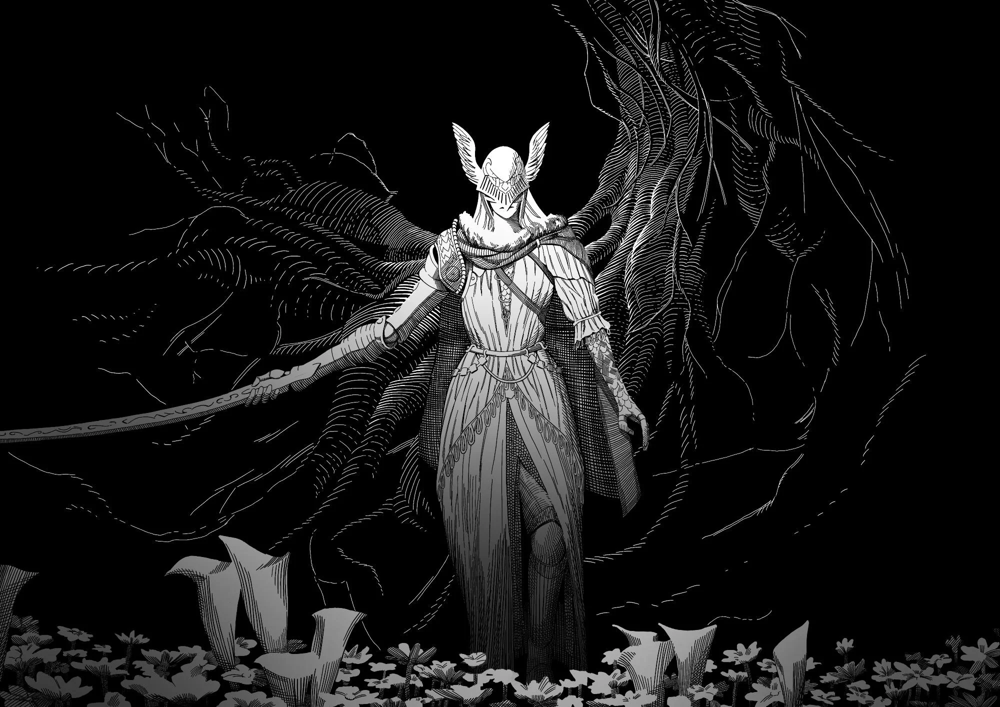
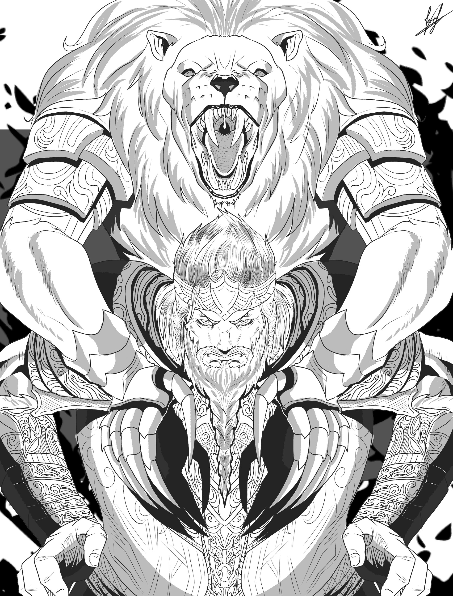
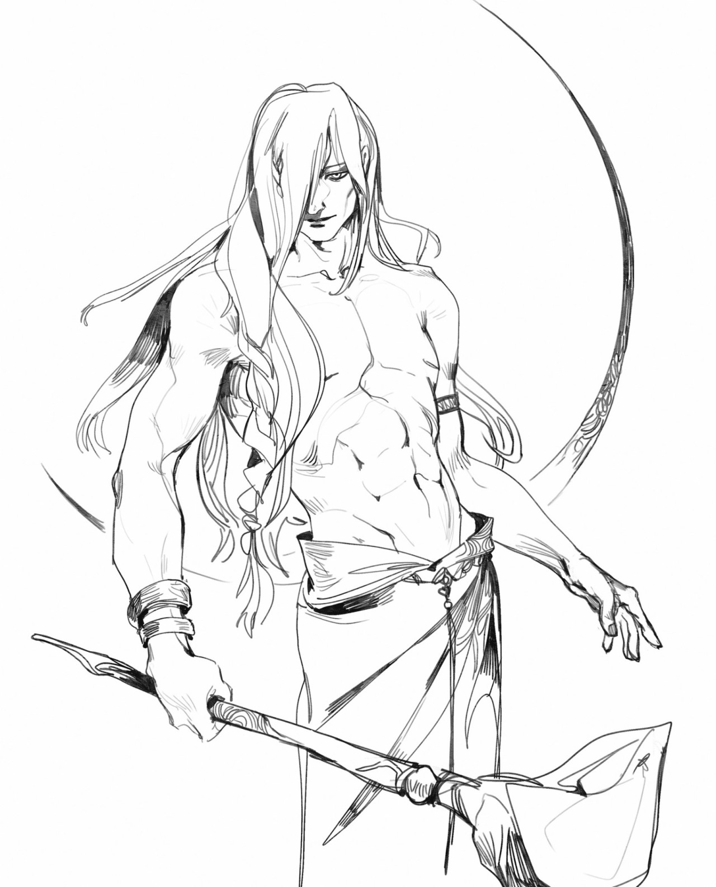
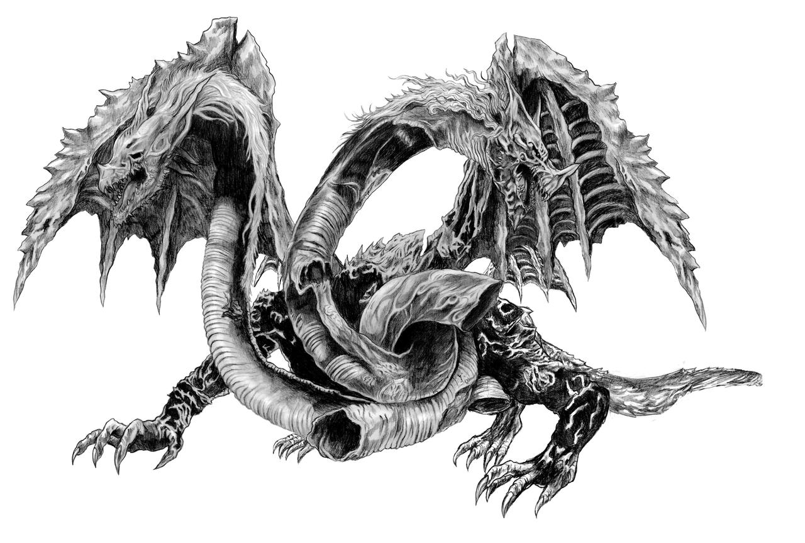

¿Que es Elden Ring?
Elden Ring es un videojuego de rol de acción en tercera persona, con una jugabilidad centrada en el
combate y la exploración. Presenta características similares de otros juegos desarrollados por
FromSoftware, tales como la saga Dark Souls, Bloodborne y Sekiro: Shadows Die Twice. Localizado en un
mundo abierto, el jugador puede explorar libremente las Tierras Intermedias y sus seis áreas
principales. Estas localizaciones varían desde Necrolimbo, una zona de prados verdes y ruinas antiguas,
hasta Caelid, un páramo poblado de monstruos no-muertos. Las zonas de mundo abierto se pueden explorar
con la montura espectral del personaje jugador, Torrentera, como principal método de viaje, además de la
opción de viaje rápido fuera de combate. A lo largo del juego, el jugador puede encontrarse personajes
no jugador (NPC) y enemigos, incluyendo semidioses que gobiernan cada área principal y sirven como los
principales jefes del juego.
Además de zonas de mundo abierto, el juego incluye también mazmorras
escondidas, como catacumbas, túneles y cuevas donde los jugadores pueden pelear contra jefes y conseguir
objetos valiosos.
Su trayecto en la industria de los videojuegos
Elden Ring recibió un reconocimiento universal de acuerdo con el agregador de reseñas Metacritic, con
una nota de 94/100 en su versión para Windows y de 96/100 para sus versiones de PlayStation 5 y Xbox
Series X y Series S, respectivamente.En OpenCritic recibió una valoración de 95/100,
situándose como el cuarto videojuego mejor valorado de la plataforma.
En la prensa internacional, la crítica alabó a Elden Ring por aspectos como la experiencia de
exploración y descubrimiento en el mundo abierto, la escala de los escenarios, la complejidad del diseño
de niveles y el diseño artístico. Tamoor Hussain, periodista de GameSpot, elogió la combinación del
diseño de niveles lineal de las mazmorras, la diferente estética entre las zonas del juego y el mundo
abierto; también declaró que "Elden Ring es un festín espectacular para los ojos".
Sus Bosses mas memorables

Malenia, la Espada de Miquella, también conocida como Malenia la Cercenada, fue una semidiosa y una Empírea que heredó una de las Grandes Runas. Durante la Devastación se enfrentó a sus hermanos por el control de las Tierras Intermedias. Malenia nació como hija de la Reina Márika la Eterna y su segundo marido, el Señor del Círculo Radagon. Tenía un hermano gemelo llamado Miquella. Tanto Malenia como Miquella eran Empíreos, lo que significa que tenían el potencial de algún día reemplazar a su madre como un nuevo dios de una era venidera. Pero como Radagon y Márika eran en realidad la misma persona, Malenia y Miquella sufrieron dolencias de nacimiento. Malenia estaba afligida por la putrefacción roja, que la devastaba desde dentro y le costaría varias extremidades, mientras que Miquella sufría una infancia eterna, incapaz de llegar a la edad adulta.

Godfrey fue el primer Señor del Círculo y el primer esposo de la Reina Márika la Eterna. Era un héroe mortal poseedor de una fuerza legendaria que lo convirtió en el primero de los semidioses, pero después de lograr su mayor victoria, la Gracia lo abandonó. Luego fue exiliado de las Tierras Intermedias y se convirtió en el primer Sinluz. En algún punto, la recién ascendida diosa Márika convirtió a este feroz guerrero en su consorte y en el primer Señor del Círculo. Al jurar convertirse en Señor, Godfrey comenzó a llevar a la bestia regente Serosh sobre su espalda para reprimir su incesante deseo de batalla. Godfrey lideró a los ejércitos de Márika en una larga campaña para defender el Árbol Áureo y su recién nacida Orden Dorada. Le sirvieron dieciséis Caballeros del Crisol, guerreros de renombre que luchaban con el poder del crisol de la vida, la forma primigenia del Árbol Áureo.

Radagon fue un campeón de la Orden Dorada, el "otro yo" de la Reina Márika la Eterna y ex esposo
de la Reina Rennala de los Caria. Como Rey Consorte de Márika, se convirtió en el segundo Señor
del Círculo. Fue visto como un gran campeón con mechones pelirrojos, y dirigió una gran hueste
dorada contra Liurnia, donde se enfrentó a Lady Rennala en la batalla. Aunque se libraron dos
guerras entre los reinos de Leyndell y Liurnia, la Primera Guerra de Liurnia y la Segunda, no
hubo vencedor en ninguna de las dos.
Radagon finalmente se arrepintió de sus agresiones
territoriales purificándose con Lágrima lunar y juró su amor a Rennala. Se convirtió en
esposo de la reina cariana, casándose con ella en la Iglesia de los Juramentos. Rennala le
regaló una espada que era otorgada por las reinas carianas a sus cónyuges para honrar una
longeva tradición. Después de contraer matrimonio con Rennala y unirse al linaje
cariano, ordenó a los preceptores mágicos carianos que se pusieran máscaras de confianza,
para dejar en claro que todos sus asuntos debían mantenerse en estricta privacidad.

El Señor dragón Placidusax es un jefe legendario opcional en Elden Ring. En la era anterior al Árbol Áureo, los poderosos dragones gobernaban el mundo. Un dios anónimo de los dragones dominaba la tierra, con el temible Señor dragón Placidusax como su Señor del Círculo. En algún punto el dios de los dragones huyó, dejando a Placidusax como un señor sin deidad. Un herido Placidusax esperaría el regreso de su dios en el corazón de la tormenta más allá del tiempo, en los límites de Farum Azula, la ciudad en ruinas. Aquí, Placidusax aparentemente existió fuera del tiempo, esperando eternamente el regreso de la deidad a la que había servido.